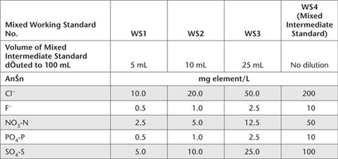

A diluted aliquot of SE is analysed by IC operating with chemical suppression of eluent EC. A small amount of sample is introduced into a stream of eluent and pumped through a column of ion exchange solid phase, where the anions are separated on the basis of their affinity for the active sites of the column packing material. Chloride and other anions such as sulfate (SO42–), fluoride (F-), phosphate (PO43–) and nitrate (NO3–) can be quantified using an EC detector operating in either peak height or peak area mode. The application is only suited to the quantitative analysis of F- if extracts are known to be free (or made to be free) of interference from short-chain organic acids and carbonate. Also, monovalent perchlorate ions (ClO4–) and Br– coelute under the specified conditions (Thorne 2004). For further background information on this analytical technology, refer to Method 5A3a, to Australian Standard AS 3741 (Anon 1990), and to APHA-AWWA-WEF (2005c).
Determination of Cl– concentrations, in conjunction with the other anions mentioned, involves injecting filtered aliquots (<0.45 μm with <0.20 μm membrane filter preferred) of SE into the IC, broadly configured for water analysis. In the Dionex system described, the sample is pumped through three different ion exchange columns and then into a conductivity detector (O’Dell et al. 1984). The first column (pre-column) acts as a guard, protecting the second or separator column from fouling by particulates including OM. The separator column contains a styrene divinylbenzene-based anion exchange resin of low capacity, designed to separate anions based on their affinity for exchange sites on the resin. The third is a suppressor column packed with high-capacity cation exchanger, capable of converting the eluent and separated anions to their corresponding acids. Finally, the separated anions in their acid form are determined quantitatively by their respective retention times, following detection with an EC cell and comparison with known standards (O’Dell et al. 1984; APHA-AWWA-WEF 2005c). The approximate detection limit is 0.1 mg Cl–/L (see Note 1).
Reagent Water
Deionised or distilled water, free of the anions of interest and containing no particles >0.20 μm.
Dissolve 0.2520 g sodium bicarbonate (NaHCO3) in Reagent Water. Separately dissolve 0.2544 g sodium carbonate (Na2CO3) in Reagent Water then combine and make to 1.0 L. This solution contains 0.003 M NaHCO3 and 0.0024 M Na2CO3. As the eluent solution acts as a growth media for microorganisms, it should not be kept for longer than one month. Changing the eluent solution may also change the order of elution of the anions of interest.
Suppressor Regenerating Solution (≈0.0125 M H2 SO4)
Dilute 0.7 mL sulfuric acid (H2SO4; 18 M) in Reagent Water and make to 1.0 L.
Chloride Primary Standard
1 L contains 10 000 mg of Cl
Dissolve 16.485 g sodium chloride (NaCl; previously dried at 110°C for 2 h) in Reagent Water and make to 1.0 L in a volumetric flask. This solution is stable for at least one month when stored at ≈4°C.
Mixed Intermediate Standard
Prepare a Chloride Intermediate Standard (mixed with other anions of interest) by diluting respective Primary Standards as shown in Table 14.3. How to prepare Primary Standards other than Cl– are provided in relevant Methods.
Mixed Working Standards
Prepare by transferring the required amount of Mixed Intermediate Standard to 100 mL volumetric flasks according to Table 14.4. Concentration/s can be increased/varied to suit the particular equipment and column/s. These solutions should be prepared fresh daily if they contain NO3– and/or HPO42–, otherwise prepare weekly.
Ion Chromatograph, etc.
All details are similar to those provided in the corresponding section of Method 5A3a.
Set up the IC in accord with manufacturer’s instructions and as described in Method 5A3a. Equilibrate by pumping eluent solution for ≈15–20 min through all three columns. Allow sufficient time for the system to stabilise, or until a stable baseline is obtained.
Table 14.3. Volumes of specified Primary Standards used to prepare 1.0 L of Mixed Intermediate Standard.
Anion |
Concentration of Primary Standards (mg element/L) |
Volume of Primary Standards (mL) |
Anion Concentration (mg element/L) |
Cl– |
10 000 |
20 |
200 |
F– |
1000 |
10 |
10 |
NO3-N |
1000 |
50 |
50 |
PO4-P |
1000 |
10 |
10 |
SO4-S |
1000 |
100 |
100 |
Table 14.4. Volumes of Mixed Intermediate Standard to prepare 100 mL volumes of Mixed Working Standards (WS) for calibrating the IC for SEs of soil.

Retention times for each anion will depend on the instrument. For a Dionex DX 500 IC (for example), retention times for F–, Cl–, NO3-N, PO4-P and SO4-S can be expected to be between 3–4, 4.5–5.5, 8–9, 10.5–11.5 and 13–14 min, respectively.
SE of soils need to be diluted before introduction into the sample entry port to minimise interferences from total dissolved salts. The dilution ratio will depend on the instrument and sample injection volume. Table 14.5 shows suggested dilution ratios for a Dionex DX 500 instrument and for a 50 μL injection volume. Filter diluted extracts as necessary to remove particles >0.20 μm, using polyethersulfone (PES) filters or equivalent.
Analyse the Reagent Water blank and the four Mixed Working Standards by injecting the appropriate sample volume, depending on the instrument (25–75 μL for a Dionex DX 500). Prepare calibration curves for Cl– (and all other anions of interest) by plotting peak height or peak area – from the chromatogram – against the concentrations of the anion calibration solutions. Analyse SE by injecting the same volume as for standards. Record all dilutions, the ion chromatogram, and evaluate peak height or peak area as required for comparison with the relevant calibration curve.
Report Cl–/SE concentrations in cmolc/L, or multiply by 35.453 to convert to mg Cl–/L.
1. For further details on IC analysis by chemical suppression of eluent conductivity, refer to APHA-AWWA-WEF (2005c).
Table 14.5. Suggested dilution ratios for a Dionex DX 500 to minimise interferences from total dissolved salts.
Conductivity Range (dS/m) |
Dilution Ratio |
5–10 |
1:5 (1+4 with Reagent Water) |
>10–25 |
1:20 (1+19 with Reagent Water) |
>25–50 |
1:50 (1+49 with Reagent Water) |
> 50 |
1:100 (1+99 with Reagent Water) |